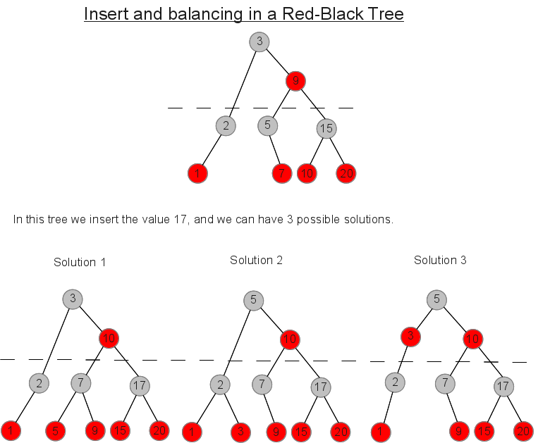
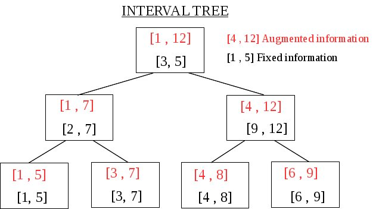
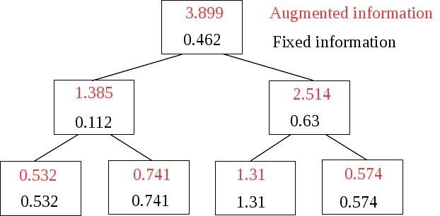
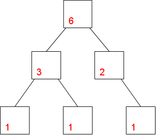

The [ Counter Tree + Suballocator ] Library
Francisco
Jose Tapia Copyright © 2010-2013 Francisco Jose Tapia
1.5.-
Next improvements
This is a long term project with 6 steps. The first 3 are done
- Design and implementation of the countertree
- Design and implementation of suballocator
- Concurrent version of countertree and suballocator
- Design and implementation of parallel functions of the class(
copy and clear), parallel fast logic functions (union,
intersection, nor intersection) with trees,, and design and
implementation of several parallel functions of <algorithms>
- Redesign the internal algorithm.
- Augmented trees
The next steps are :
1.5.1.-
Parallel design of functions of the trees (copy, clear), logical
functions with trees (union, intersection, not intersection) and
several functions of <algorithm>
The next step is design parallel functions for the class. Some functions
of the class, when the tree is big, are time expensive, like the copy (
used in the copy constructor and in the operator =) and the clear of the
tree ( used in the clear function and in the destructor). The use of
parallel algorithms for these functions cut the time needed.
Many times the maps are used as index. When make a search in the map,
obtain a set of keys. In the selection process you must combine several
sets of keys with logical functions ( union, intersection,
not-intersection....). Many times these set are very large, the time and
the memory used too, like in the map-reduce systems. The
map
reduce system are the heart of the
Big
Data applications. With the random-access iterators is easy to
make these functions parallel. The idea is to create a rich set of
parallel fast logical functions in order to simplify the process, reduce
the memory used in the process and cut the time needed with the
concurrent process.
With the random access iterators, it is easy to design parallel
algorithms for many functions of <algorithm>, like for_each,
count, count_if ....... You can find examples of parallel functions in
the vector_tree (
2.3.-
Examples) and in the set map (
3.6.- Examples )
These new functions need an additional parameter indicating the number
of threads used in the process. The value 0 indicate the number of
thread used is the number of cores of the processor.
The benchmark for the set concurrent (
benchmark_set_intersection_cnc.cpp ) is a parallel version of the
function set_intersection compared with a single core function and the
function defined in <algorithm>. ( You can find it in the folder
benchmark of the file
countertree_2.0.zip
)
I have the design on paper of the parallel algorithms of copy, clear,
the logical functions( union, intersection, not-intersection) and many
functions included in <algorithm>
1.5.2.-
Redesign of the internal algorithm
When you design a
tree, you must develop a
balanced algorithm in order to prevent a degenerate
tree
(
Tree like a linked list). You have several
types of balanced trees ( mainly Red-Black and
AVL ).
That decision about the type of balance tree have influence on the
quality of the balance and the speed of the
tree.
The most used are the red-black trees. You have an excellent description
with code in
“Introduction to
Algorithms” ( Cormen , Leiserson, Rivest).

But , even the same type of balance tree,
,it can be done in several ways,
In order to design an algorithm for to
insert, delete and balance a red-black tree you must take care about
1.- What of the
solutions do you want
2.- How do you define
the rules, which applying obtain the desired solution.
3.- What's the cost in
time of process .
4.- Benefits,
advantage of this solution respect the others
When I decided add the counter
to the nodes for the design of the CounterTree,
I tried to use the code showed in "Introduction to algorithms", but
was very complex the management of the counters, and decide design my
own balanced algorithm based on the 234Tree description. The result is
the actual version of CounterTree.
It is 10% more or less slower than the GCC
implementation, but is logic , because must manage the pointers and
the counters.
It's only a first version. I am convinced, this algorithm can be
improved in the design and in the implementation, Looking for a way for
to improve the speed , I examined others implementations of Red-Black
trees, several books an mainly with the experience obtained with the
Suballocator.
I decided to change several things of the algorithm and the
implementation, pursuing to improve the speed. I have a first design
done on paper.
Some parallel functions of the tree, described in the previous point,
with a big number of threads can appear bottleneck effects. The redesign
of several algorithms using techniques of split and join the tree,
permit to be used by hundreds of threads without bottleneck effects.
This technique permit to make parallel functions didn't done previously.
The redesign of the algorithm must provide the split and join trees
functions, which permit to redesign several functions of the trees in
order to be efficient in a manycore system.
The new algorithm must provide a low level catalog of operations with
the nodes. ( insert, delete , rotations, swap... ) in order to provide
support to the next point, the
AUGMENTED
TREES
1.5.3.-
Augmented trees
The augmented trees are trees with additional information, which is not
fixed. It must be processed and changed when you insert, delete or move
an node in the tree.
The augmented trees have in each node a data not fixed( augmented
data). This data depend of the node and others node of the tree ( their
data, position, number of them ...). Due this, each change, insertion,
deletion or movement, generates changes in the augmented information in
all the nodes related.

This is an interval tree. The tree is ordered by the lower value of the
fixed information. The augmented information represent the interval of
the node and all the nodes under it including itself.

This tree is unordered ( The unordered trees are vector_tree). The
augmented information represent the addition of the augmented
information of the nodes under it , plus its fixed information.

The countertrees are augmented trees. The fixed information don't exist,
and the augmented information represent the number of nudes under it.
Every time you insert, delete or move a node in the tree, this
information must be recalculate.
You can find augmented trees with a wide variety of informations in
areas from the statistical or games, to the biology. Even you can find
trees with several augmented informations simoultaneously
For the speed the best solution is to include the information and the
process inside the
tree. With this, you
customize your
tree and obtain the maximum
speed.
In the new version of the algorithm, all the internal process of the
tree can be decomposed in a set of small operations
of a “catalog” like:
- Insert/delete a node in the right/left pointer of a node.
- All the rotations with nodes
- Swap of nodes directly linked and not directly linked
- Design the information to insert in the node
When you want have an augmented tree, you must codify, what must do with
your augmented information in each operation of the "catalog" . When the
tree execute its the code of each operation , execute also the code of
the same operation of your augmented information.
You can have augmented trees by several concepts simultaneously. Each
concept have codified the code of all the operations of the catalog. And
then when the tree execute the code of the operation, execute too the
code of all the augmented information of the tree.
You have compiled augmented trees, balanced, robust and with the maximal
speed, and with all the benefits of the countertrees, concurrent and,
thread-safe operations, access by position, use of suballocators....
 Boost
C++ Libraries
Boost
C++ Libraries